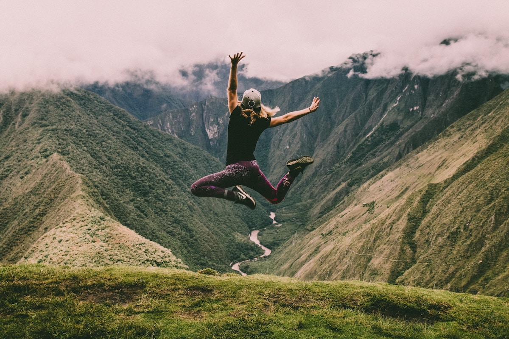

Trail Runners Paradise
This website has been created for trail runners by enthusiastic trail runners. Here you will be able to read some interesting articles about races, training methods, health, food, injuries and more.

What is Trail Running?
Trail Running is a specialized type of running that occurs inside nature landscapes. The main attribute of this type of races is a high altitude increase and decrease in the races profile.
